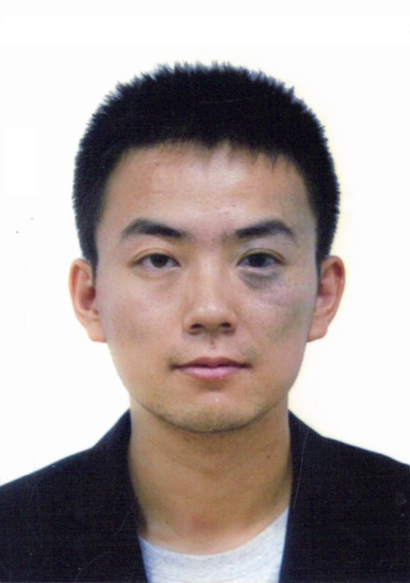
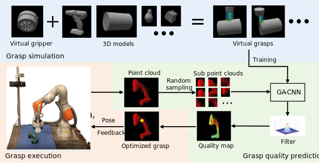

{kind=link}
Hui Zhang (张慧)
Posdoc Researcher
University of Hamburg
Email: hui dot zhang at uni-hamburg dot de
|  |
|
||||||
I am a postdoc researcher in the TAMS group at the University of Hamburg. I obtained my Ph.D. degree at KU Leuven, Belgium. Before this, I obtained my Master's degree from Southeast University, China and Bachelor's degree from China University of Geosciences (Wuhan), China. My research interests focus on contact modeling, sim2real learning for robotics, multimodal sensing and learning, dexterous grasp and manipulation.
News
[2023.06] I started my new job as a postdoc researcher at the University of Hamburg.
[2023.04] I defended my Ph.D. degree at KU Leuven, Belgium on 14.04.2023.
Publications
|  | Deep Learning Reactive Robotic Grasping With a Versatile Vacuum Gripper Hui Zhang *, Jef Peeters, Eric Demeester, Karel Kellens,IEEE T-RO, 2022 [Paper] [BibTex] |
Academic service
Awards
[10.2017] National Scholarship, by Ministry of Education, China.
[10.2014] National Scholarship, by Ministry of Education, China.